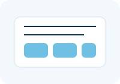

Strategic transformation and implementation guidance
Enterprise data roadmaps, governance, and organizational transformation
Tool evaluation, vendor selection, and technology stack optimization
Business process improvement and automation opportunities
Data governance frameworks, control reviews, and responsible implementation
We analyze your current state, challenges, and transformation opportunities.
We create a comprehensive strategy with prioritized use cases, timelines, and resource requirements.
We guide execution with hands-on support, training, and continuous optimization.
Partner with us to develop and execute a technology strategy that supports measurable outcomes.
Strategize With Us